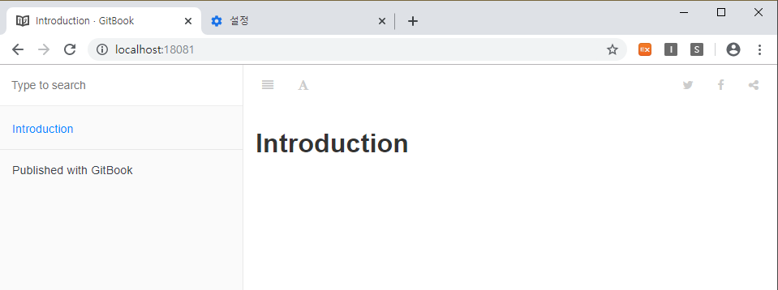

GitBook On Docker
GitBook 소개
도커에서 GitBook 실행
도커 이미지 선택
docker search gitbookgitbook으로 검색된 이미지가 나오는데 가장 많이 다운받은 순으로 봤을 때 제일 높은 이미지인
fellah/gitbook를 가져왔다.docker pull fellah/gitbook
실행
docker run -p 80:4000 -v /srv/gitbook fellah/gitbook4000– GitBook 기본 서버 포트35729– Live reload server port. 실시간 로드되는 서버 포트?/srv/gitbook– 데이터 볼륨 설정을 통해 gitbook 실행할 경로를 넘겨준다.
# -d : 백그라운드에서 컨테이너 실행 # -rm : 컨테이너 종료시 컨테이너 자동 삭제 docker run --name gitbook --rm -d -p 18081:4000 -p 18082:35729 -v "/$PWD/gitbook-work":/srv/gitbook -it fellah/gitbook //bin/bash # 컨테이너 접속 docker attach gitbook- 빌드(정적 웹페이지로 빌드)
docker run --rm -v "/$PWD/gitbook-work":/srv/gitbook fellah/gitbook gitbook build
GitHub에 GitBook 구성하기
- gitbook 컨테이너에 접속해서 gitbook 구성하기
root@de811cc0e8f2:/srv/gitbook# gitbook init ./
root@de811cc0e8f2:/srv/gitbook# ls -lart
total 1
-rwxr-xr-x 1 root root 16 Nov 10 13:37 README.md
-rwxr-xr-x 1 root root 40 Nov 10 13:37 SUMMARY.md
drwxrwxrwx 2 root root 0 Nov 10 13:39 ..
drwxrwxrwx 2 root root 0 Nov 10 13:41 .
drwxrwxrwx 2 root root 0 Nov 10 13:41 _book
root@de811cc0e8f2:/srv/gitbook# gitbook serve
GitBook 구성 설명
SUMMARY.md
메인 챕터와 서브챕터의 구조를 정의
책의 목차를 생성하는데 사용된다.
파일의 형식은 간단한 링크들로만 구성되어 있다.
# Summary * [Introduction](README.md)- 링크의 제목 = 챕터의 제목
- 링크의 대상 = 해당 챕터의 파일 경로
앵커도 활용 가능하다.
# Summary * [Introduction](README.md) ### PART 1 * [anchor-test](anchor-test/anchor.md#section1)
페이지 작성
mkdir anchor-test touch anchor.md vi anchor.md```markdown
# anchor.md
description: 페이지의 간략설명입니다.
# section 1
```javascript
var s = "JavaScript syntax highlighting";
alert(s);
```
```python
s = "Python syntax highlighting"
print s
```
```
No language indicated, so no syntax highlighting.
But let's throw in a <b>tag</b>.
```
```
빌드 후 GitHub에 배포하기
cd gitbook git checkout gh-pages cd ../ docker run --rm -v "/$PWD/gitbook-work":/srv/gitbook fellah/gitbook gitbook build cp -rf gitbook-work/_book/* gitbook/ cd gitbook git clean -fx node_modules git clean -fx _book git add . git commit -a -m "Update docs" git push origin gh-pages